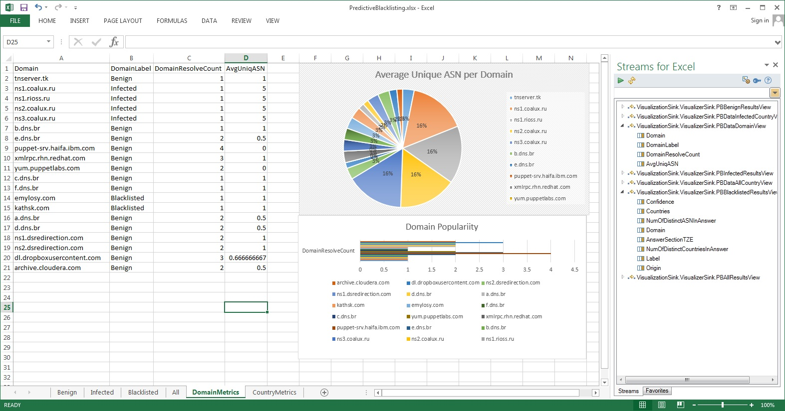
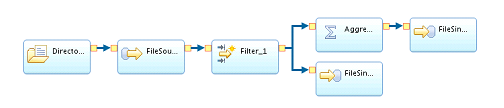

 <!-- Portfolio Modals -->
<div class="portfolio-modal modal fade" id="tooling" tabindex="-1" role="dialog" aria-hidden="true">
    <div class="modal-content">
        <div class="close-modal" data-dismiss="modal">
            <div class="lr">
                <div class="rl">
                </div>
            </div>
        </div>
        <div class="container">
            <div class="row">
                <div class="col-lg-8 col-lg-offset-2">
                    <div class="modal-body">
                        <h2>Tooling</h2>
                        <hr class="star-primary">
                            <div class="resiliencyText"> 
                                <h3>Java Application API</h3>
                                <p>Streams has made developing Streams applications easier than ever with the introduction of our Java Application API. Millions of Java developers worldwide can now write Streams code without learning a new language. Get started with our <a href="http://ibmstreams.github.io/streamsx.documentation/docs/4.1/java/java-appapi-devguide/">Java API development guide</a>.</p>
                                <h3>Streaming Data to Microsoft Excel</h3>
                                
                                <p>Visualizing streaming data is easier than ever with the Streams Microsoft Excel Plug-in. Drag and drop live data-feeds onto your worksheet, insert a chart, and watch as your chart changes in real-time to reflect the reality of NOW. <a href="https://developer.ibm.com/streamsdev/docs/streams-4-0-streams-for-microsoft-excel/">Start Streaming to Excel here</a>.</p>
                                <h3>Graphical Editing with an Eclipse IDE</h3>
                                
                                <p>Writing streaming applications can be hard. With the Streams Studio graphical editor, it’s not. Build your applications using your ideal mix of drag-and-drop editing and rich text editing. <a href="https://developer.ibm.com/streamsdev/docs/streams-studio-overview/">Learn more about Streams Studio here</a>.</p>
                                
                                <h3>Admin Console for Configuration and Monitoring</h3>
                                
                                <p>Setting up, configuring, and monitoring your Streams environment is easier and more efficient than ever. Check application status in a single glance, configure high-availability with just a few clicks, and dig deep into metrics within seconds. Read an overview <a href="  https://developer.ibm.com/streamsdev/docs/getting-started-with-application-dashboards">here</a>.</p>
                                
                            </div>
                        <button type="button" class="btn btn-default" data-dismiss="modal"><i class="fa fa-times"></i> Close</button>
                    </div>
                </div>
            </div>
        </div>
    </div>
</div>

